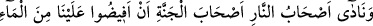
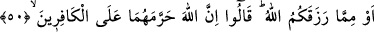
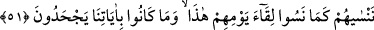
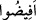

CEHENNEMLİKLERİN
CENNET EHLİNDEN TALEPLERİ
50. Cehennem ehli, cennet ehline: Suyunuzdan veya Allah’ın size verdiği rızıktan
biraz da bize verin! diye seslenirler. Onlar da: Allah bunları kâfirlere haram
kılmıştır, derler.
51. O kâfirler ki, dinlerini bir eğlence ve oyun edindiler de dünya hayatı onları
aldattı. Onlar, bu günleri ile karşılaşacaklarını unuttukları ve ayetlerimizi bile bile
inkâr ettikleri gibi biz de bugün onları unuturuz.
“Cehennem ehli, cennet ehline” her iki grup da yerlerine yerleştikten sonra:
“Suyunuzdan” yani cennetin suyundan “veya Allah’ın size verdiği rızıktan” yani diğer
içeceklerden veya yiyeceklerden “biraz da bizim üzerimize akıtın” da susuzluğumuz
gitsin, hararetimiz sönsün!” “derler.” Cehennemlikler orada aç susuz kalınca: “Ey
Rabbimiz, cennette bizim yakınlarımız var. Bize izin ver de onlarla görüşüp konuşalım.”
derler. Kendilerine izin verilir. Cennetteki akrabalarına ve onların içinde bulundukları
türlü türlü nimetlere bakarlar. Onlar cennetteki yakınlarını tanıdıkları halde, yüzlerinin
siyahlığından cennettekiler onları tanıyamazlar. Kendilerini tanıttıktan sonra
akrabalarından kendilerine cennetin suyundan akıtmalarını isterler.
Ayette geçen “__WORD__” (akıtın) kelimesinin kökü olan “ifâza”, esas olarak içeceklerden
mâî olanlar hakkında kullanılır. Buna göre “Allah’ın size verdiği rızıktan” ifâdesinden
maksad yine içecek cinsinden olan su dışındaki diğer şeylerdir.
“Allah’ın sizi rızıklandırdığı yiyeceklerden üzerimize dökün de onlardan yiyelim.
Belki açlığımızı giderir.” demektir. Çünkü “ifâza”, bol bol vermekten ibârettir.
Ebû Hayyân der ki: Doğru olan “ifâza” (akıtma) fiilinin “ilkâ” (atma) mânâsında
olmasıdır. Çünkü bu istekte bulunan kimseler, dünyada midelerinin kulu kölesi olup
yemeye ve içmeye son derece hâris idiler. Onlar, yaşadıkları halde öldüler ve öldükleri
şekilde de haşrolundular. Mü’minler ise dünyada çok aç ve susuz kalmışlar, karınlarını
Firdevs cennetindeki nimetlere kavuşmak üzere aç bırakmışlardı. Bu sebeple cennette
meşguliyetleri, canlarının arzuladığı şeyleri yerine getirmektir.
Ayette, azab içinde bile olsa insanın yemek ve içmekten müstağnî kalamayacağı beyan